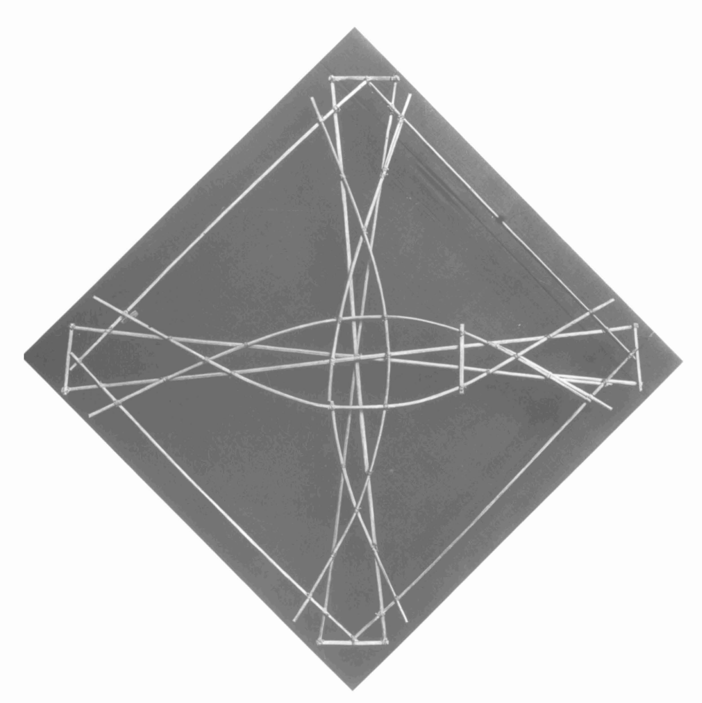
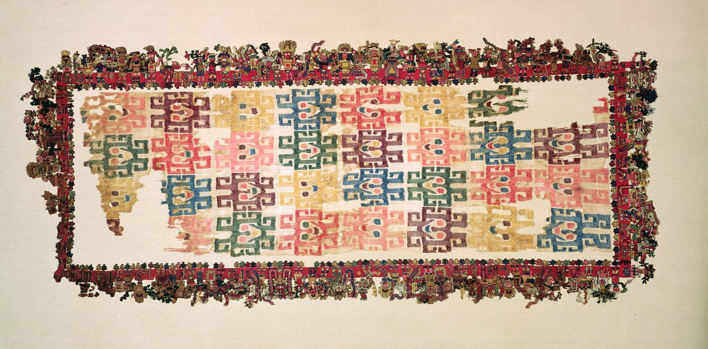
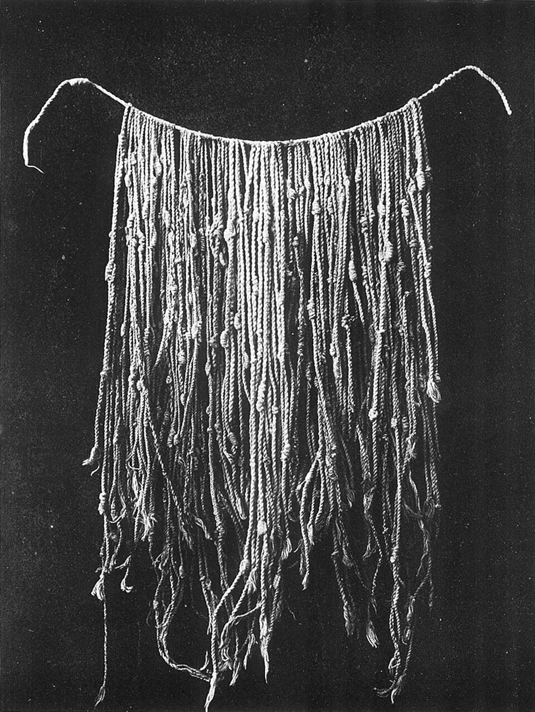
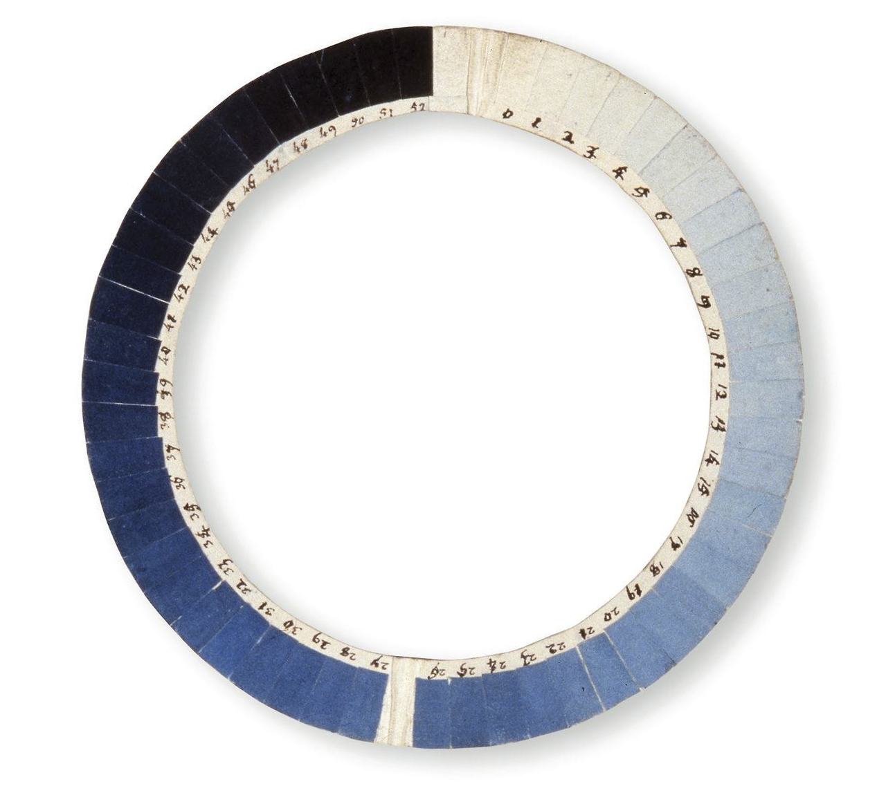

Encoding and Recording the World
A Historical Journey Through Material Knowledge Systems
Anne-Laure Freant
Across cultures and eras, humans have developed material systems for organizing knowledge long before the emergence of digital technologies.
Through a combination of historical research and contemporary artistic and design references, the book investigates how humans have repeatedly developed physical forms for encoding, recording, and transmitting knowledge across cultures and eras.
Bringing together artefacts traditionally studied across archaeology, anthropology, media history, cartography, scientific instrumentation, and contemporary design, Encoding and Recording the World approaches these objects as part of a broader material culture of information. The book contributes to a broader investigation into the material culture of information, scientific modelling, visualization practices, and contemporary forms of data physicalization.
This book is currently in the making. Subscribe for updates,
research notes, and to be notified upon publication.
Table of Contents
Mesopotamian Clay Tokens
The Invention of Inscription and Abstraction

Material Geographies
Spatial Knowledge Before the Paper Map

Informative Textiles
Encoding in Weaving, Knitting and Embroidery

Deciphering Khipus
A Research Journey into the Knotted Artefacts of the Inkas
Photography as Autographic Systems
When Light Records Itself

Analog Instruments
The Early History of Standardized Observation
Materializing Sound
From Vibration to Artefacts
Epistemic Models
A Short History of Analog Models in Scientific Research
Perforated Paper
From the Jacquard Loom to IBM Punched Cards